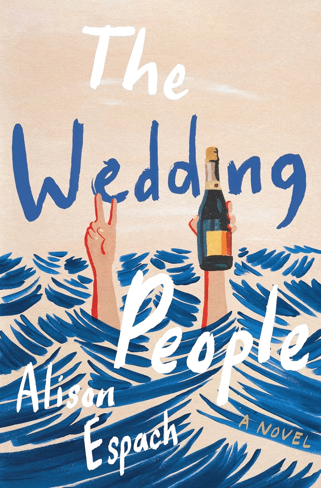
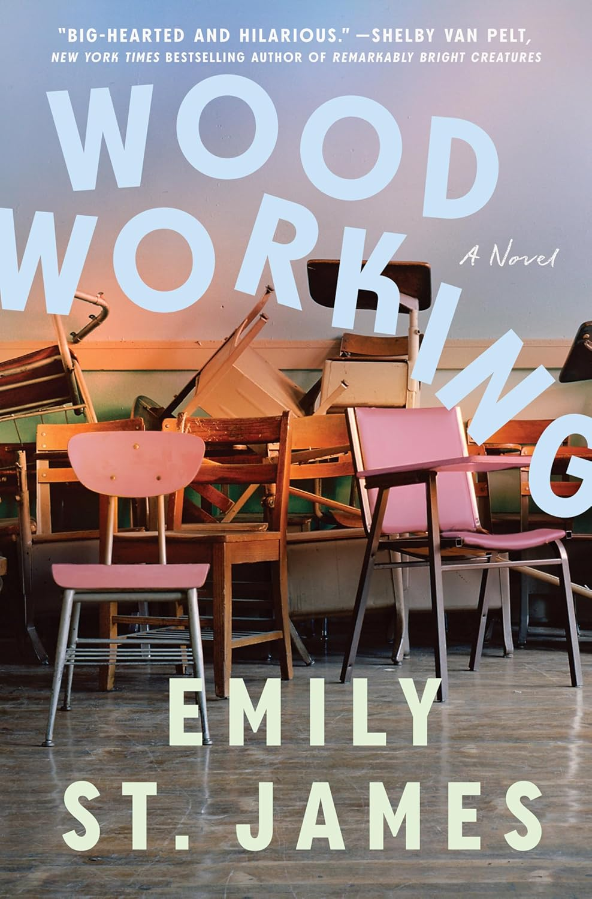
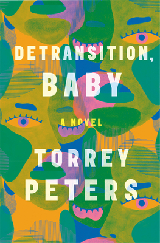
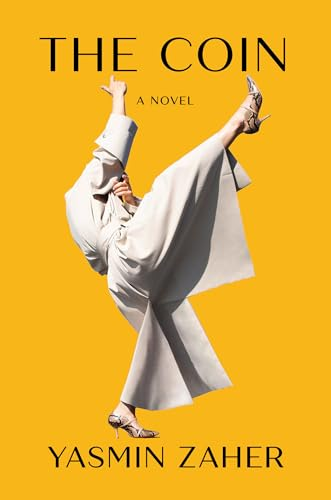

Click the image for goodreads synopsis redirection
"The spellbinding new novel from one of our most fearless chroniclers of the female experience, Bunny is a down-the-rabbit-hole tale of loneliness and belonging, friendship and desire, and the fantastic and terrible power of the imagination."

"Fast-paced, thrilling, and emotional, Atmosphere is Taylor Jenkins Reid at her best: transporting readers to iconic times and places, creating complex protagonists, and telling a passionate and soaring story about the transformative power of love—this time among the stars."
"In turns absurdly funny and devastatingly tender, Alison Espach’s The Wedding People is ultimately an incredibly nuanced and resonant look at the winding paths we can take to places we never imagined—and the chance encounters it sometimes takes to reroute us."

"Kaveh Akbar’s Martyr! is a paean to how we spend our lives seeking meaning—in faith, art, ourselves, others."
"A story about the awkwardness of growing up and the greatest love story of all, that between us and our friends, Woodworking is a tonic for the moment and a celebration of womanhood in all its multifaceted joy."
"This provocative debut is about what happens at the emotional, messy, vulnerable corners of womanhood that platitudes and good intentions can't reach. Torrey Peters brilliantly and fearlessly navigates the most dangerous taboos around gender, sex, and relationships, gifting us a thrillingly original, witty, and deeply moving novel."

"A Clue-like, locked-room mystery and a heartwarming journey of the spirit, The Maid explores what it means to be the same as everyone else and yet entirely different—and reveals that all mysteries can be solved through connection to the human heart."
"Enthralling, sensory, and uncanny, The Coin explores materiality, nature and civilization, class, homelessness, sexuality, beauty—and how oppression and inherited trauma manifest in every area of our lives—all while resisting easy moralizing. Provocative and original, humorous and inviting, The Coin marks the arrival of a major new literary voice."
All quotes from goodreads
Visit goodreads